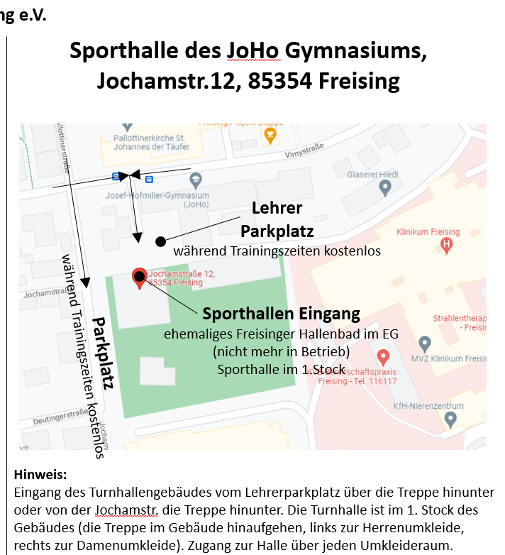
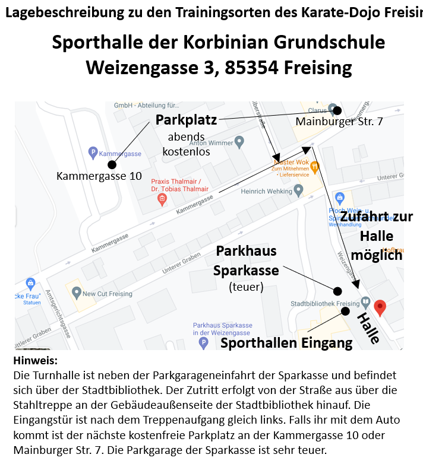
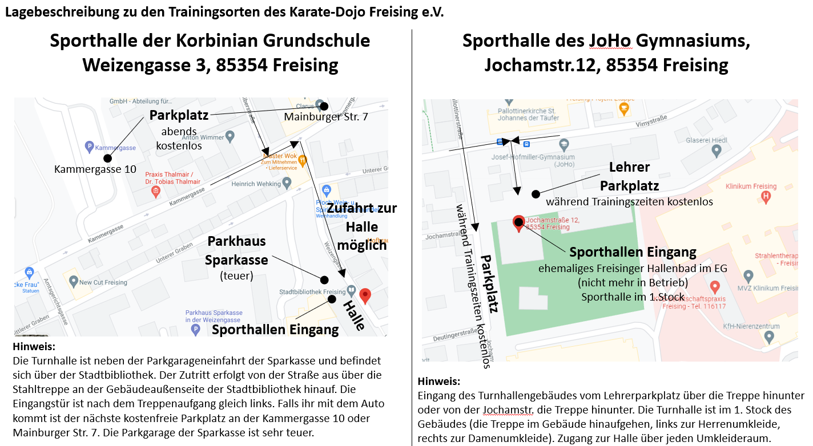

Sporthalle des Josef-Hofmiller-Gymnasiums
Vimystraße 14, 85354 Freising

Sporthalle der Grundschule St. Korbinian
Weltenburger Straße 3, 85354 Freising


Hinweise
Die eingebetteten Karten sind für die schnelle Orientierung gedacht. Hinweise wie Herren- oder Damenumkleideseite stehen bei den jeweiligen Trainingszeiten.